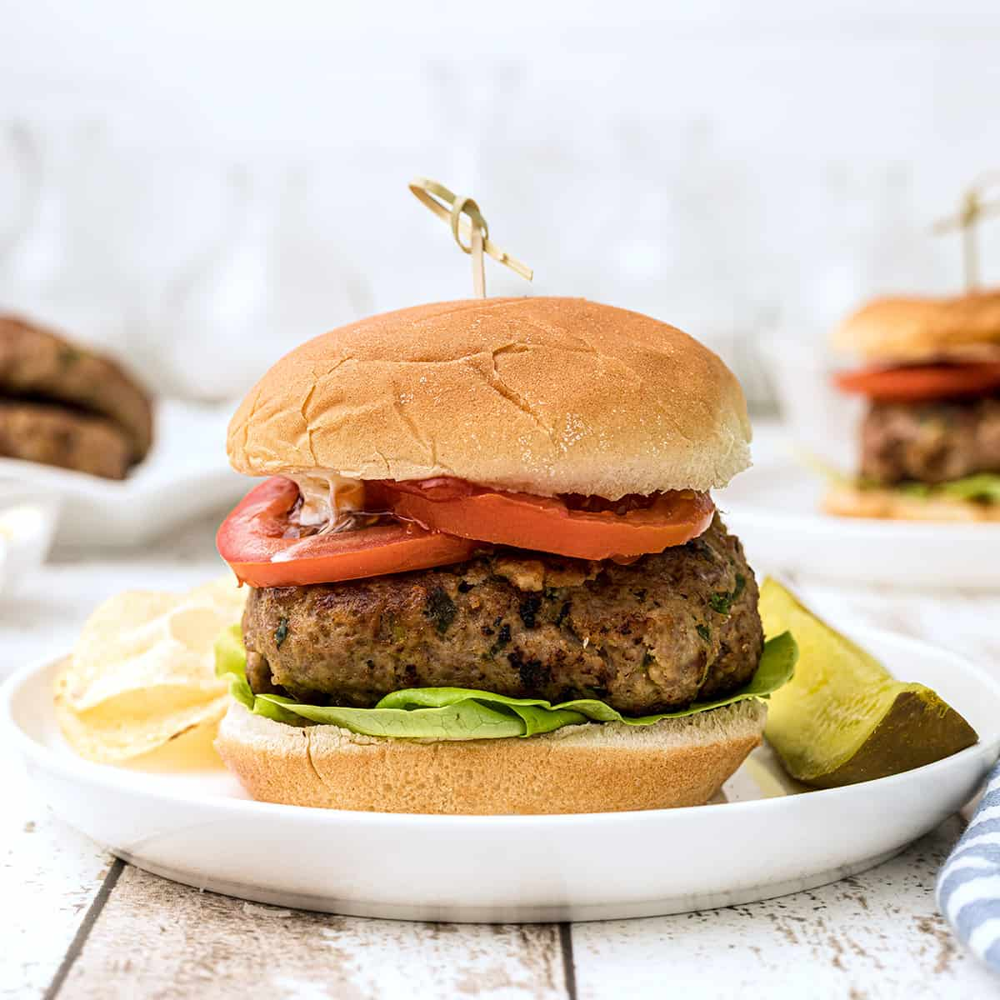

Turkey Burgers

Delicious and Juicy
This straight to the point ingredient list produces one of the best turkey burgers
this side of the Mississippi. It is the perfect summer or weekend dinner for any and
every meat eating American.
Ingredients
4 Servings
- 1 lb Ground Turkey
- 1/2 cup grated Gruyere cheese
- 3 green onions, finely chopped
- 1/4 cup bread crumbs
- 1/4 cup dijon mustard
- 1/2 tsp salt
- 1/2 tsp pepper
- 2 cloves of garlic, minced
- dash of Worcheshire sauce
Steps
- Mix all of the ingredients in a large bowl until evenly distributed.
- Form into 4 patties approximately 1 inch thick.
- Cook the patties over medium-high heat on a grill or grill pan for
approximately 5 minutes per side. (A regular
pan will also work fine.)
- Serve on toasted buns with condiments as desired.
- Enjoy!